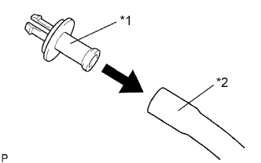
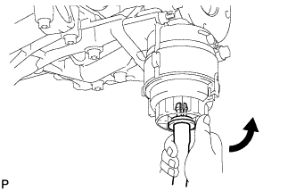
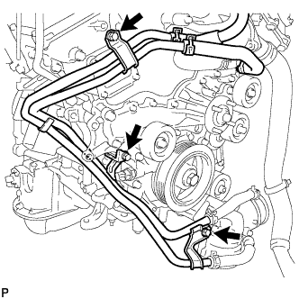
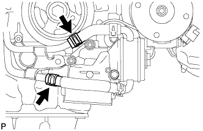
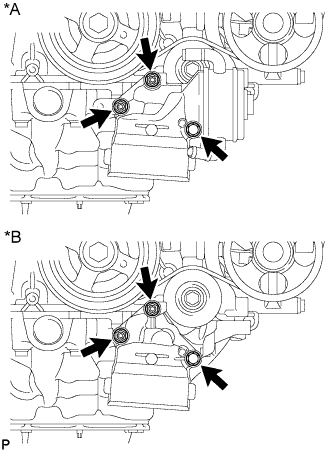

МАСЛЯНЫЙ РАДИАТОР ДВИГАТЕЛЯ > СНЯТИЕ |
| 1. СНИМИТЕ НИЖНЮЮ НАКЛАДКУ ПЕРЕДНЕГО БАМПЕРА |
Освободите фиксатор, выверните 5 болтов и снимите нижнюю облицовку переднего бампера.
| 2. СНИМИТЕ ЗАЩИТУ КАРТЕРА ДВИГАТЕЛЯ № 1 В СБОРЕ |
Выверните 4 болта.
 |
Отсоедините защиту картера двигателя от кузова автомобиля, как показано на рисунке.
| 3. СНИМИТЕ ВЕРХНЕЕ УПЛОТНЕНИЕ КРОНШТЕЙНА РАДИАТОРА |
Освободите 13 фиксаторов и снимите верхнее уплотнение кронштейна радиатора.
| 4. СЛЕЙТЕ ОХЛАЖДАЮЩУЮ ЖИДКОСТЬ ДВИГАТЕЛЯ |

| *1 | Пробка расширительного бачка | *2 | Пробка радиатора |
| *3 | Пробка сливного крана радиатора | *4 | Пробка сливного крана блока цилиндров |
Ослабьте пробку сливного крана радиатора.
Снимите пробку радиатора и слейте охлаждающую жидкость.
Ослабьте 2 пробки сливных кранов блока цилиндров и слейте охлаждающую жидкость из двигателя.
| 5. СЛЕЙТЕ МОТОРНОЕ МАСЛО |
Снимите крышку маслоналивной горловины.
Снимите пробку сливного отверстия масляного поддона и слейте моторное масло в резервуар.
Установите новую прокладку и пробку сливного отверстия масляного поддона.
| 6. СНИМИТЕ ФИЛЬТРУЮЩИЙ ЭЛЕМЕНТ МАСЛЯНОГО ФИЛЬТРА |
|  |
Подсоедините шланг с внутренним диаметром 15 мм (0,591 дюйма) к трубке.
| *1 | Патрубок |
| *2 | Метка |
 |
Снимите пробку сливного отверстия масляного фильтра.
 |
Установите трубку на крышку масляного фильтра.
| *1 | Пробка |
| *2 | Клапан |
| *3 | Патрубок |
| *4 | Кольцевое уплотнение |
| *5 | Шланг |
|  |
Убедитесь, что масло слито из масляного фильтра. Затем отсоедините трубку и снимите кольцевое уплотнение, как показано на рисунке.
 |
Снимите крышку масляного фильтра с помощью SST.
| *1 | Фиксатор кронштейна масляного фильтра |
 |
Снимите с крышки масляного фильтра фильтрующий элемент масляного фильтра и кольцевое уплотнение.
| *1 | Кольцевое уплотнение |
| 7. ОТСОЕДИНИТЕ ПЕРЕПУСКНУЮ ТРУБКУ ОХЛАЖДАЮЩЕЙ ЖИДКОСТИ |
|  |
Выверните 3 болта.
|  |
Отсоедините 2 шланга и перепускную трубку охлаждающей жидкости.
| 8. СНИМИТЕ КРОНШТЕЙН МАСЛЯНОГО ФИЛЬТРА |
|  |
Отверните 2 гайки, выверните болт и снимите кронштейн масляного фильтра с прокладкой.
| *A | Для моделей с масляным радиатором |
| *B | Для моделей без масляного радиатора |
| 9. СНИМИТЕ МАСЛЯНЫЙ РАДИАТОР В СБОРЕ |
 |
Снимите 2 шланга.
Выверните болт, отверните гайку и снимите масляный радиатор.
Снимите с болта уплотнительную шайбу.